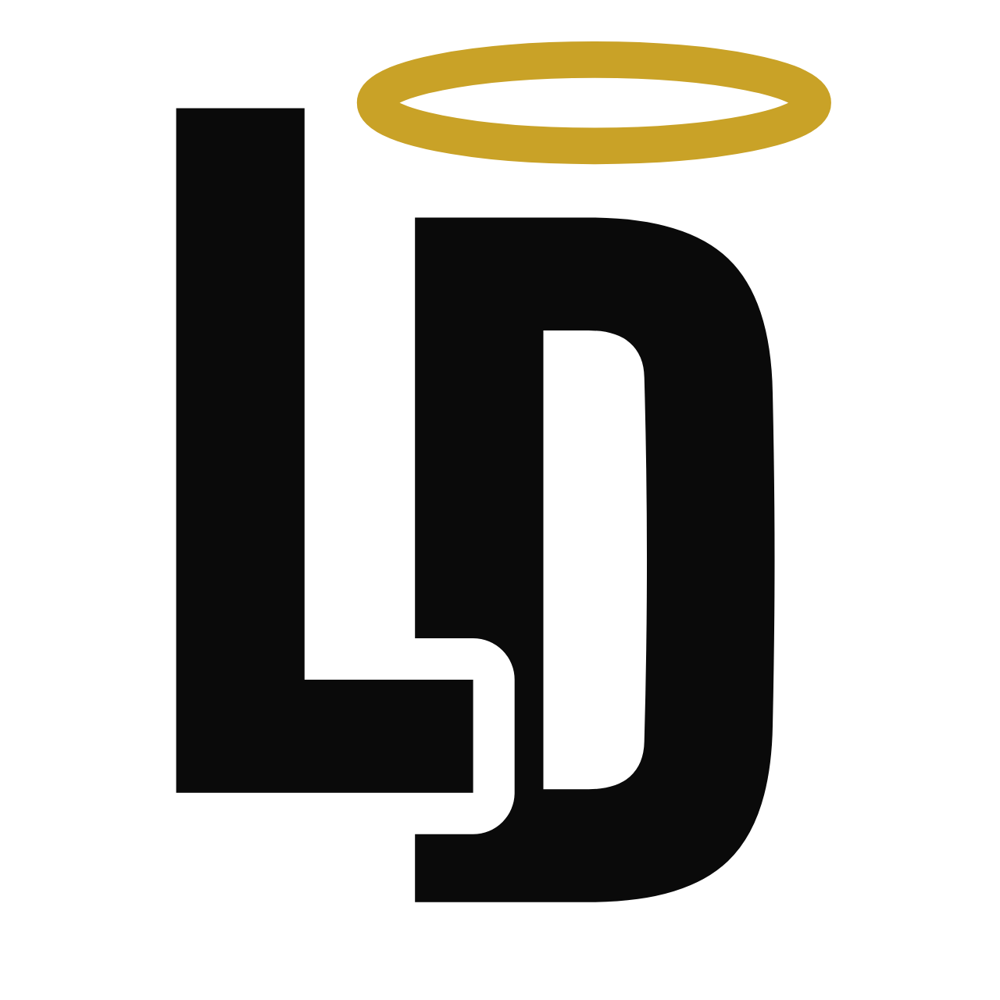
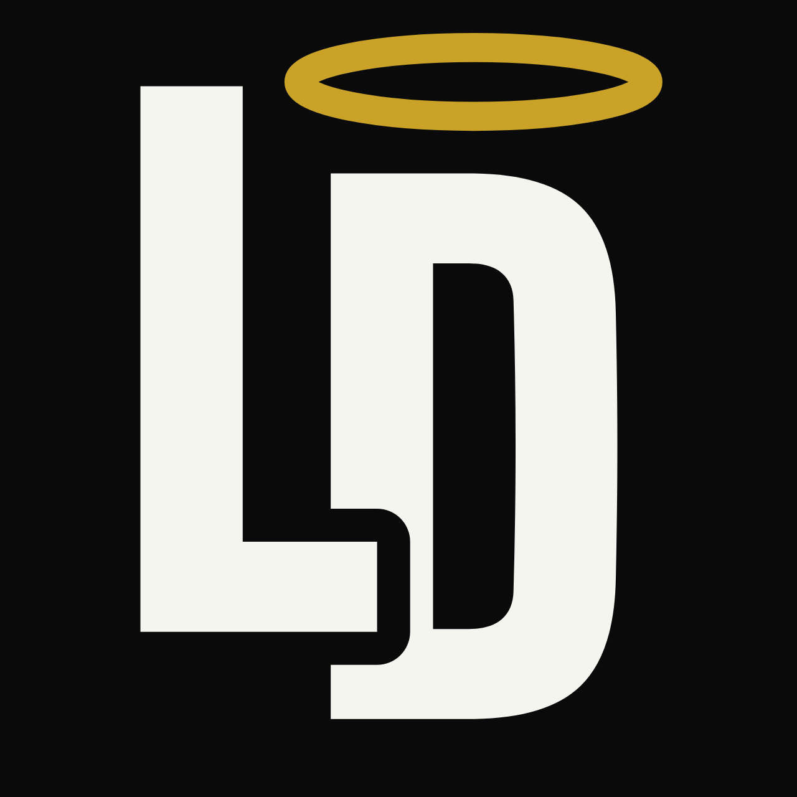

Logo balíček v2
verze 2.0 FINÁL · odesláno výrobci 5. 6. 2026
Podklady pro vyšití LD monogramu na štulpny — vektory, PNG a pokyny pro digitizéra.
Verze 2.0 nahrazuje v1.0; starší podklady se už nepoužívají.
Soubory ke stažení

Světlá nit
pro tmavé štulpny · průhledné pozadí

Tmavá nit
pro světlé štulpny · průhledné pozadí

Náhled
na černém pozadí — jen pro představu, pozadí se nevyšívá
PNG = 1280×1280 px. SVG = čistý vektor (křivky, bez fontů).
Klíčové parametry (při výšce výšivky 35 mm)
- Výška celého motivu: 35 mm (svatozář + monogram). Při jiné velikosti přepočítat úměrně — pod 30 mm nejít.
- Tahy písmen L a D: 5,6 mm — plný fill / satin dle uvážení digitizéra.
- Mezera (spára) mezi L a D: 1,8 mm — KRITICKÝ DETAIL. Nesmí se zalít nití; mezera musí zůstat viditelně otevřená (prosvítá podklad).
- Svatozář = tenký prstenec (NE plný ovál!): tah 1,6 mm, vnitřní otvor 2,2 mm — satin steh.
- Logo se nesmí zrcadlit, naklánět ani měnit poměr stran.
Barvy nití
| Prvek | Barva | Pantone | Hex referenční |
|---|
| Svatozář | zlatá | 7563 C | #C9A227 |
| Písmena (tmavá verze) | černá | Black 6 C | #0A0A0A |
| Písmena (světlá verze) | lomená bílá | 11-0107 TPG | #F5F5F0 |
Postup pro digitizéra
- SVG/PNG nejde přímo do vyšívacího stroje — nutná digitalizace do .PES/.DST (push/pull kompenzace na úplet).
- Před sérií prosíme o sew-out vzorek na reálném úpletu štulpny (ne na tkanině) — kontrolujeme hlavně spáru mezi L×D a otvor svatozáře.
- Výsledný .PES/.DST + foto vzorku prosím poslat ke schválení.
Kontakt: Lukáš Doležal · eldee.cz
← zpět na HQ
{kind=link}
{kind=link}
{kind=link}
{kind=link}
{kind=link}
{kind=link}